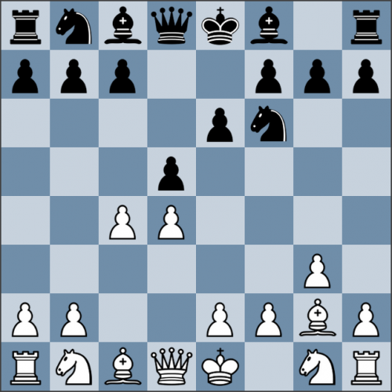

Каталонское начало

Каталонское начало - популярный среди гроссмейстеров солидный дебют. Несмотря на это, черные имеют неплохие шансы на победу, это неоднократно блестяще показывал Владимир Крамник. Назад На главную
Каталонское начало - популярный среди гроссмейстеров солидный дебют. Несмотря на это, черные имеют неплохие шансы на победу, это неоднократно блестяще показывал Владимир Крамник.